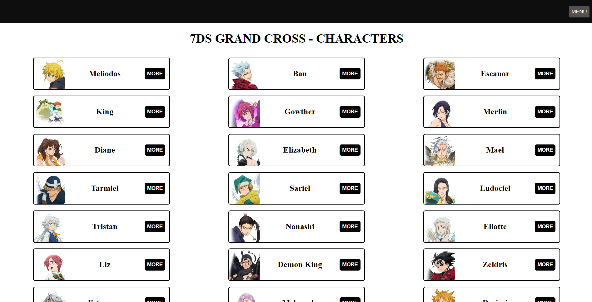
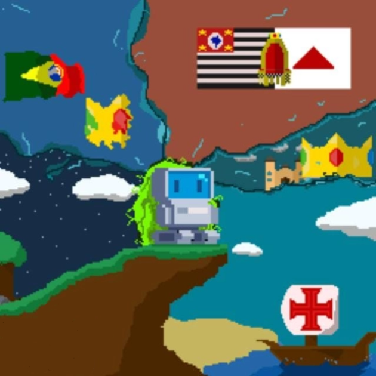

Guilherme Almeida
Desenvolvedor
SOBRE MIM
Comecei minha jornada na área de tecnologia no ensino médio, cursando Técnico em Informática, me formando no ano de 2022. Desde então, para me manter atualizado das tecnologias utilizadas no mercado de trabalho, busquei estudar sobre, através de cursos. A One Bit Code se tornou o principal meio de aprendizagem, onde estudo para me tornar um desenvolvedor Full-Stack e Python. Atualmente, estou cursando Desenvolvimento de Software Multiplataforma na FATEC de São José dos Campos.
FORMAÇÃO ACADÊMICA/CURSOS
Ensino Médio
Colégio Joseense
2020 - 2022
Ensino Médio completo com técnico em Informática incluido.
Ensino Superior
FATEC - SJC
2024 - Presente
Cursando Desenvolvimento de Software Multiplataforma
Cursos extras
One Bit Code
2023 - Presente
Curso voltado para a área de tecnologia com obtenção de certificados.
Cursos extras
Inglês - Wizard
2017 - 2023
Curso para aprendizagem de inglês completo com certificado.
HABILIDADES
CERTIFICADOS


A data nos certificados é somente de quando foram expedidos.
PROJETOS
API - Vereadores de São José dos Campos
A API dos Vereadores de São José dos Campos permite ao usuário visualizar dados dos principais vereadores da cidade, como proposições apresentadas, presenças em plenário, entre outros. Além de apresentar dados, possibilita a comparação entre candidatos, ajudando o eleitor na hora de escolher o voto.

7DS - Grand Cross DataBase
Site que visa facilitar a visualiazação de informações do jogo "Seven Deadly Sins - Grand Cross", como personagens e habilidades, modos de jogo e dicas. Servindo de apoio para jogadores iniciantes que desejam jogar com facilidade.

TCC - The History of a Nation
Projeto criado para a conclusão de curso do Ensino Médio Técnico. The History of a Nation se trata de um jogo que se passa em pontos importantes da história brasileira, facilitando a educação infantil, através de um meio dinâmico e divertido.